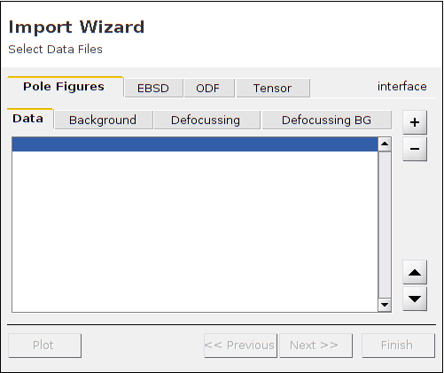
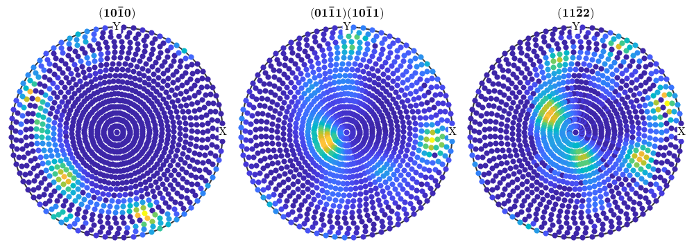
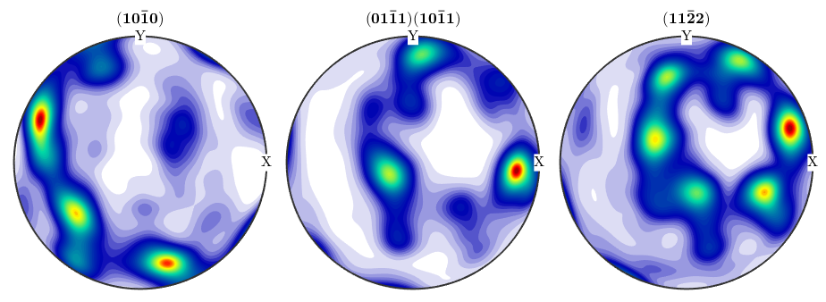
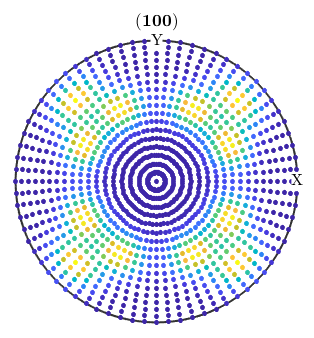

This section describes the class PoleFigure and gives an overview of the functionality MTEX offers to analyze pole figure data.
Contents
Class Description
The general workflow to deal with pole figure data in MTEX is as follows.
- Import the pole figure data and create a variable of type PoleFigure
- Visualize the pole figure data
- Manipulate the pole figure data
- Compute an ODF from the pole figure data
SUB: Import pole figure data
The most comfortable way to import pole figure data into MTEX is to use the import wizard, which can be started by the command
import_wizard
If the data are in a format supported by MTEX the import wizard generates a script which imports the data. More information about the import wizard and a list of supported file formats can be found [[ImportPoleFigureData.html,here]]. A typical script generated by the import wizard looks as follows.
% specify scrystal and specimen symmetry cs = crystalSymmetry('-3m',[1.4,1.4,1.5]); % specify file names fname = {... fullfile(mtexDataPath,'PoleFigure','dubna','Q(10-10)_amp.cnv'),... fullfile(mtexDataPath,'PoleFigure','dubna','Q(10-11)(01-11)_amp.cnv'),... fullfile(mtexDataPath,'PoleFigure','dubna','Q(11-22)_amp.cnv')}; % specify crystal directions h = {Miller(1,0,-1,0,cs),[Miller(0,1,-1,1,cs),Miller(1,0,-1,1,cs)],Miller(1,1,-2,2,cs)}; % specify structure coefficients c = {1,[0.52 ,1.23],1}; % import pole figure data pf = loadPoleFigure(fname,h,cs,'superposition',c) % After running the script the variable *pf* is created which contains all % information about the pole figure data.
Warning: loadPoleFigure is depreciated. Please use instead PoleFigure.load pf = PoleFigure crystal symmetry : -3m1, X||a*, Y||b, Z||c* specimen symmetry: 1 h = (10-10), r = 72 x 19 points h = (01-11)(10-11), r = 72 x 19 points h = (11-22), r = 72 x 19 points
SUB: Plot pole figure data
Pole figures are plotted using the [[PoleFigure.plot.html,plot]] command. It plottes a single colored dot for any data point contained in the pole figure. There are many options to specify the way pole figures are plotted in MTEX. Have a look at the plotting section for more information.
figure plot(pf)
SUB: Manipulate pole figure data
MTEX offers a large collection of operations to analyze and manipulate pole figure data, e.g.
- rotate pole figures
- scale pole figures
- find outliers
- remove specific measurements
- superpose pole figures
An exhaustive introduction how to modify pole figure data can be found here As an example, if one wants to remove all intensities with polar angle between 74 and 81 degree one can do
pf(pf.r.theta >= 74*degree & pf.r.theta <= 81*degree) = []; plot(pf)

SUB: Calculate an ODF from pole figure data
Calculating an ODF from pole figure data can be done using the command calcODF. A precise description of the underlying algorithm as well as of the options can be found here
odf = calcODF(pf,'zero_range','silent') plotPDF(odf,h,'superposition',c,'antipodal')
odf = ODF
crystal symmetry : -3m1, X||a*, Y||b, Z||c*
specimen symmetry: 1
Radially symmetric portion:
kernel: de la Vallee Poussin, halfwidth 5°
center: 19839 orientations, resolution: 5°
weight: 1

SUB: Simulate pole figure data
Simulating pole figure data from a given ODF has been proven to be useful to analyze the stability of the ODF estimation process. There is an example demonstrating how to determine the number of pole figures to estimate the ODF up to a given error. The MTEX command to simulate pole figure is calcPoleFigure, e.g.
cs = crystalSymmetry('m-3m')
pf = calcPoleFigure(SantaFe,Miller(1,0,0,cs),regularS2Grid)
plot(pf)
cs = crystalSymmetry symmetry: m-3m a, b, c : 1, 1, 1 pf = PoleFigure crystal symmetry : m-3m specimen symmetry: 222 h = (100), r = 72 x 37 points
Complete Function list
| calcError | RP and mean square error |
| calcErrorPF | error polefigure between meassured and recalculated pole figures |
| calcFEMODF | PDF to ODF inversion |
| calcNormalization | normalization of a meassured pole figure with respect to a second pole figure |
| calcODF | PDF to ODF inversion |
| calcPoleFigure | simulate pole figure |
| cat | implement cat for PoleFigure |
| char | standard output |
| correct | s polfigures for background and defocussing |
| display | standard output |
| export | pole figure in an ASCII file |
| findOutlier | find outliers in pole figures |
| isOutlier | find outliers in pole figures |
| isempty | overloads length |
| load | import pole figure data |
| max | imum of two pole figures or the maximum of a single polefigure |
| mean | of pole figure intensities |
| min | imum of two pole figures or the minimum of a single polefigure |
| minus | implements pf1 pf2 |
| mrdivide | implements pf1 ./ b and a ./ pf2 |
| mtimes | scaling of PoleFigures, implements pf1 * b and a * pf2 |
| noisepf | simulate diffraction counts |
| normalize | normalization of a meassured pole figure with respect to an ODF |
| plot | pole figure |
| plotDiff | difference plot between two pole figures or an odf and a pole figure |
| plus | implements pf1 + pf2 |
| rdivide | implements pf1 ./ b and a ./ pf2 |
| rotate | s pole figures by a certain rotation |
| rotate_outer | is called by rot * pf |
| scale | polefigure by a factor |
| select | PoleFigures |
| subsasgn | overloads subsasgn |
| subsref | overide polefigure() and polefigure{} |
| times | implements pf1 .* b and a .* pf2 |
| uminus | implements pf |
| union | crytsallographic direction to one |
| unique | remove dublicated points in a polefigure |